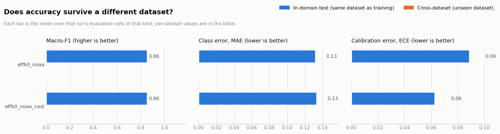
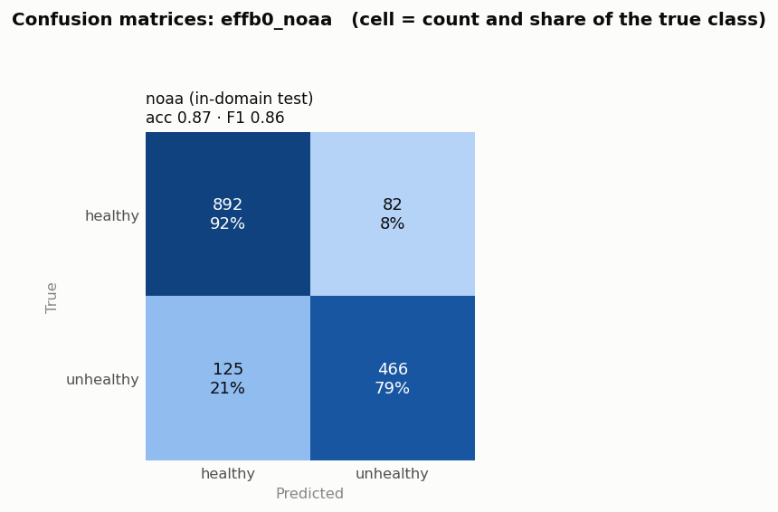
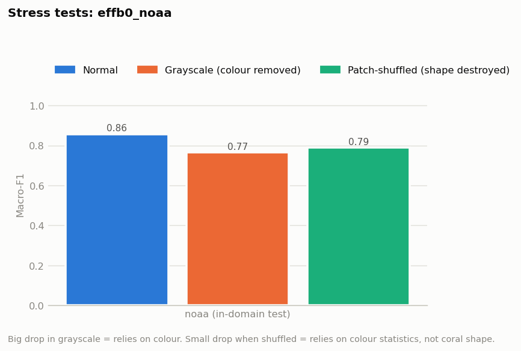
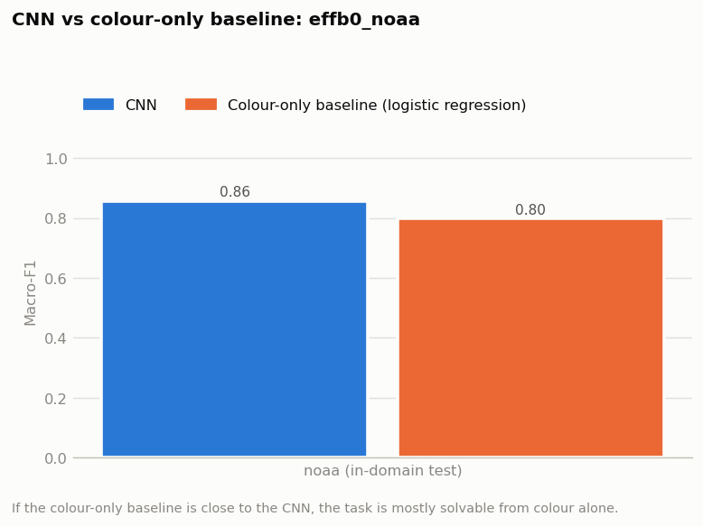
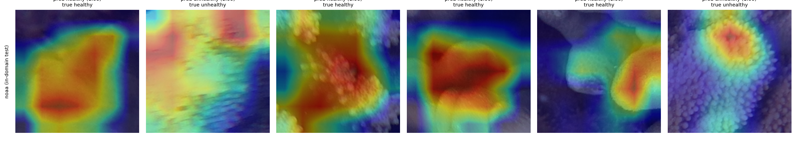
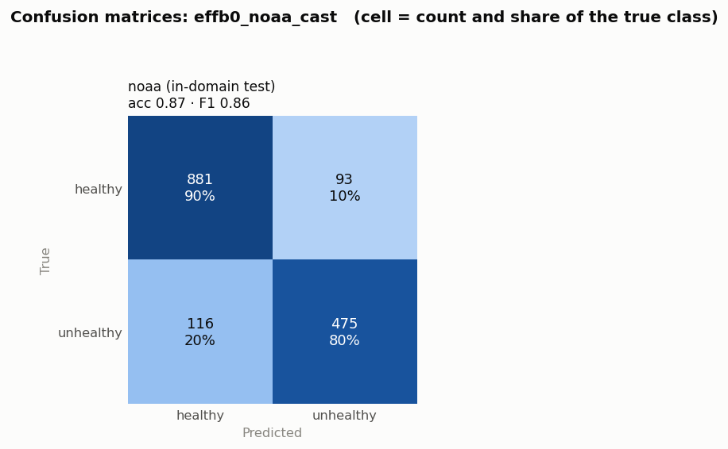
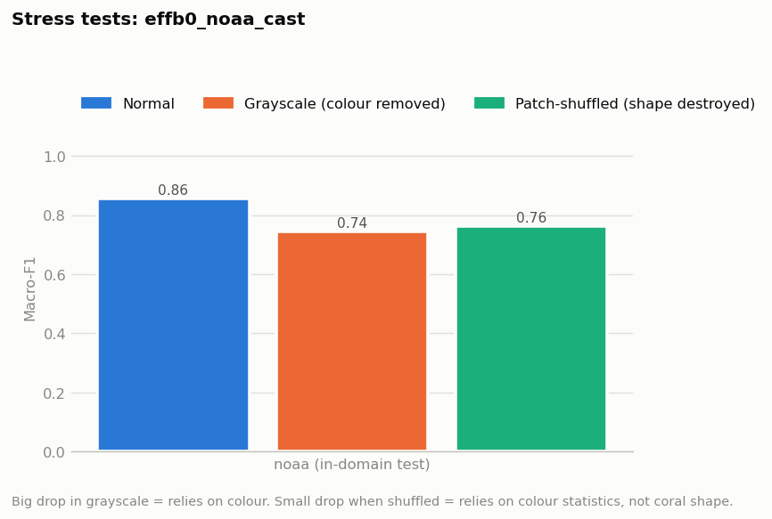
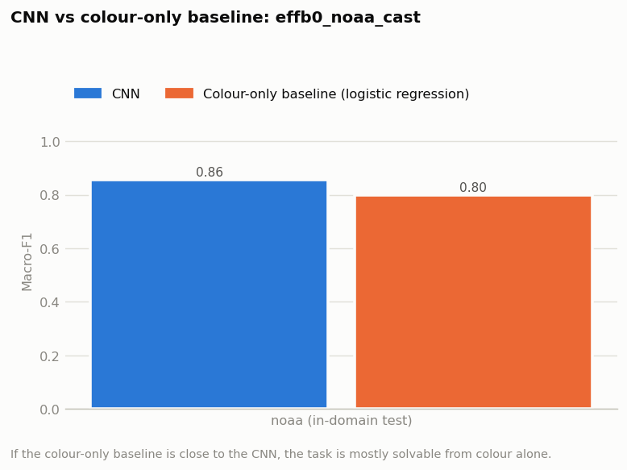
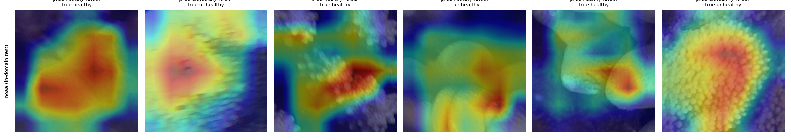

| Run | Evaluation set | Type | Images | Accuracy | Macro-F1 | MAE | ECE | Colour-only F1 | Grayscale F1 | Shuffled F1 |
|---|---|---|---|---|---|---|---|---|---|---|
| effb0_noaa | noaa (in-domain test) | in-domain | 1565 | 0.868 | 0.857 | 0.132 | 0.089 | 0.799 | 0.766 | 0.790 |
| effb0_noaa_cast | noaa (in-domain test) | in-domain | 1565 | 0.866 | 0.857 | 0.134 | 0.063 | 0.799 | 0.743 | 0.763 |








